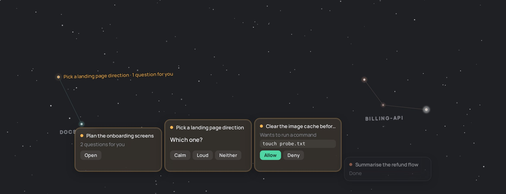
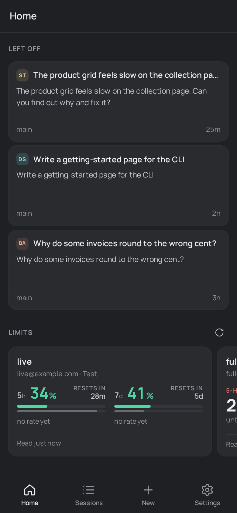
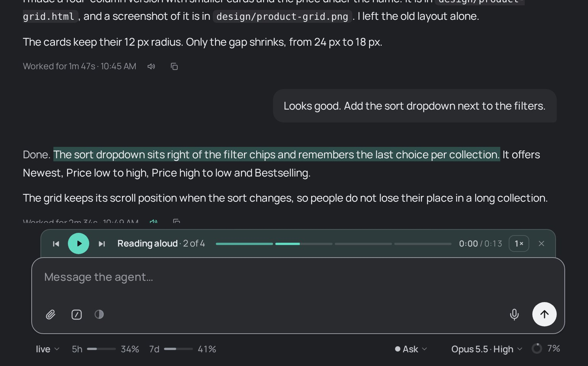
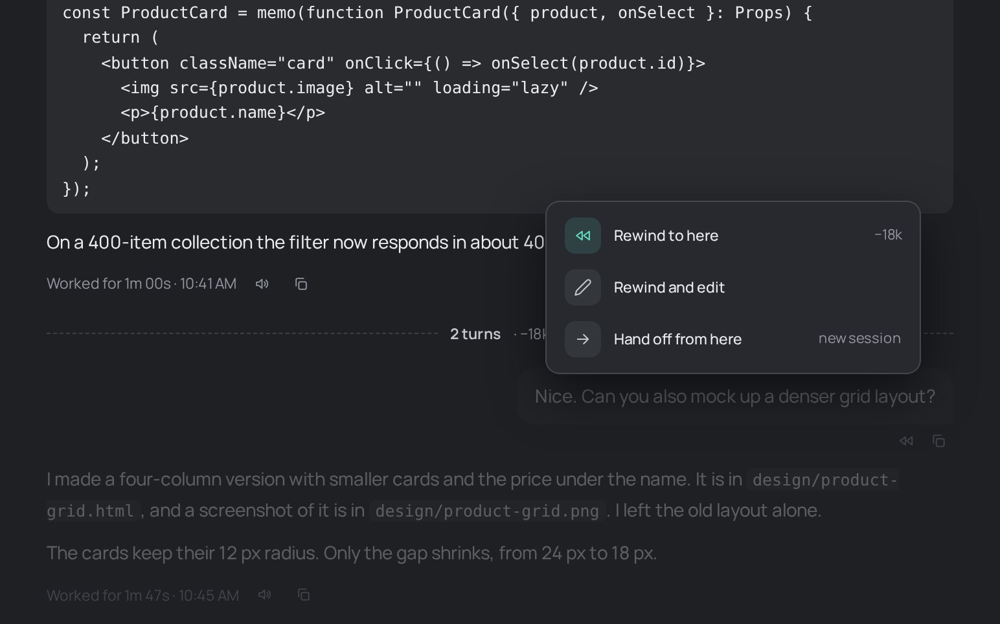
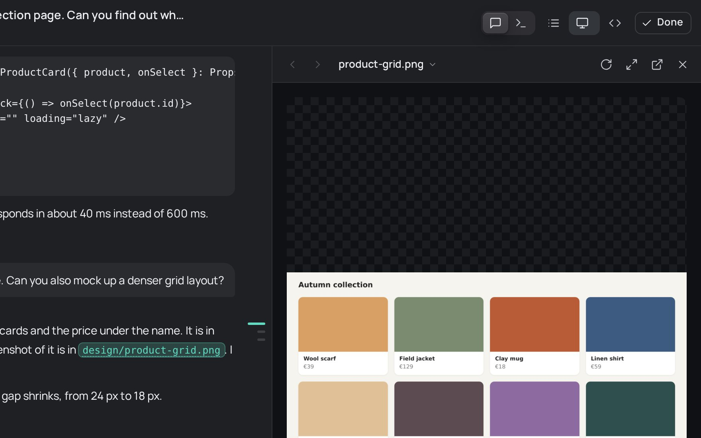
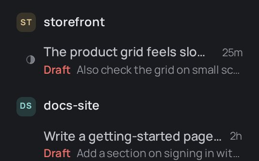

Screenshots from the real app, taken by a script against the test sandbox: made-up projects, a fake agent, nothing of yours.
1 · The site · a grid after the four big sections, before “Get it”
The four sections stay as they are: they run the app live. The grid covers the rest, one picture and one line each.
Small things that add up when five agents are working at once.

Leave it up on a second screen. Answer permissions and short questions from the dock.

Over your home Wi-Fi. No account, no outside server.

Answers read to you sentence by sentence, on your own computer.

Take back a message and everything after it, files included.

Pages, pictures and PDFs the agent made open beside the chat.
A long session goes on in a fresh one without losing anything.
Talk instead of typing. Speech stays on your computer.

What you didn't send waits in its own session.
2 · The README · a short pitch and the same features up top; the long list moves to a guide
Today the README is about 330 lines, and what Workwood does only starts halfway down. It gets a picture, the same tiles as a table GitHub can draw, then Install and Run. The long “What works” list moves to docs/guide.md word for word, so nothing is lost.
Run many Claude Code sessions at once. Workwood shows which are working and which are waiting for you.
| The Wall Answer permissions and short questions from a dock. |
On your phone Over your home Wi-Fi, no outside server. |
Read aloud Answers read to you, on your computer. |
| Rewind Take back a message and all after it. |
Previews What the agent made, beside the chat. |
Drafts Unsent text stays in its session. |
(as now)
npm run shots, writing to site/shots/, which the site and the README both use (recommended). Or take them once by hand.docs/guide.md (recommended), or keep it below Features.